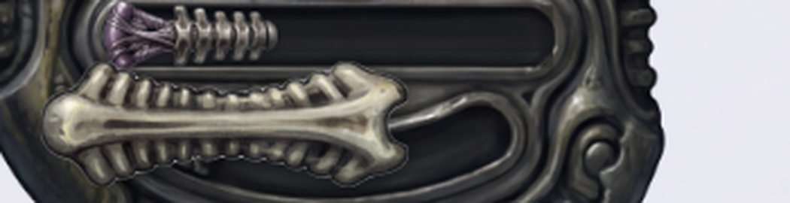
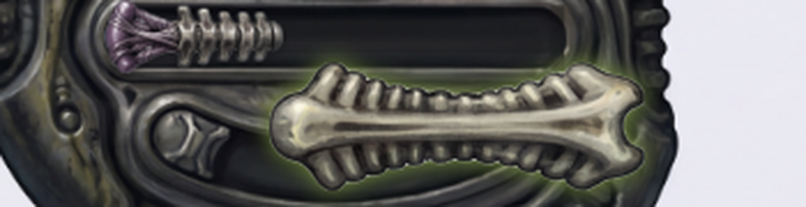
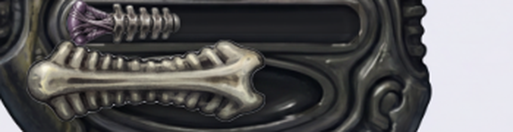
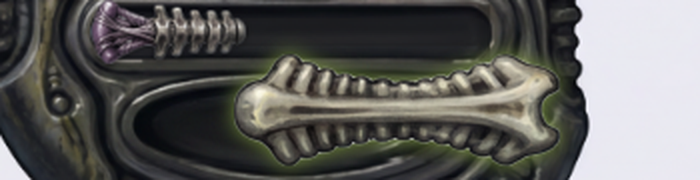

The generated biomech-giger skin ("came out GREAT") shipped with one real defect: the shuffle switch's recessed trough was the wrong shape for its own bone-lever — a leftover curved bean/"smile" compartment with a decorative bolt icon baked in, sized for something else entirely. Fix: cut the lever's own alpha silhouette, sweep it across its two detent positions (Minkowski-sum), dilate for a housing lip + rim, erase the old wrong housing, and inpaint a new recessed trough constrained exactly to that swept shape via fal-ai/gemini-25-flash-image/edit — then composite the result back masked to the swept silhouette so the final housing geometry is guaranteed correct regardless of what the model painted outside it. Both panels below are the REAL shipped player — click the switch to flip it.




(a) BEFORE housing-shape correctness: The curved 'bean'/'smile' shape of the housing is incorrect for the straight bone lever and its linear sliding path, causing the lever to overhang the top edge of the housing. (b) AFTER housing-shape correctness at OFF: Correct. The new oval-shaped trough perfectly contains the silhouette of the bone lever when it is in the OFF (left) position. (c) AFTER housing-shape correctness at ON: Correct. The trough is appropriately sized to also fully contain the lever when it is in the ON (right) position, correctly representing the full swept path of the control. (d) material/lighting match of the new AFTER trough to the surrounding body: Good match. The shading, highlights, and texture of the new recessed trough integrate seamlessly with the surrounding 'wet-bone-metal' material of the player's body. (e) whether any leftover decorative icon or old-housing artifact is visible in the AFTER trough: None visible. The new trough is clean and free of the decorative gear icon that was present in the BEFORE version.
Fix confirmed working. The biomech-giger shuffle switch's trough now matches the bone lever's swept silhouette at both detent positions — no overhang, no leftover decorative bolt icon, material/lighting consistent with the surrounding wet-bone-metal body. Both the deterministic geometry (composite masked to the swept silhouette, so the shape match is guaranteed by construction) and the independent SOTA-vision review agree: PASS.
Deferred, not in scope here: the baked seek-slider thumb defect (gate reason
baked-thumb:seek in orch.json) and the volume-knob dead-rotation defect
noted in director-review.json — both go through the erase12 chain separately.
Spend: $0.0558 total (1 inpaint roll + 1 VLM review call). Well under the $0.3 cap for this task.